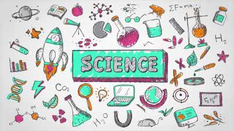
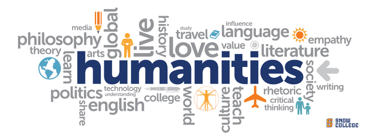
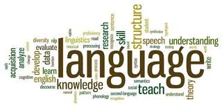
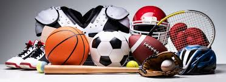

Our academics programs
We strive for excellence in education and character formation.
Levels of education
We offer both O-level and A-level programs preparing students for national examinations and higher education.
The school offers a well- structured curriculum at both levels that equips learners with knowledge, skills and values needed for academic excellence and future careers.

We deal in science subjects such as
- Physics
- Chemistry
- Biology
With well equiped laboratories that support practical learning in all the science subjects

Our well experienced Math teachers teach our students mathematics that equips them with critical thinking, analytical skills and the ability to solve real world problems effectively.

For humanities we deal in subjects like;
- History
- Geography
- Religious studies
These help children to be diverse and learn something beyond sciences

Students are encouraged to do atleast one new language so as to be inclusive and we have a variety which include;
- English
- French
- Luganda
And many other language studies
Extra curricular activities
We are well equiped for a wid range of extra ciricullar activities and the children will be well guided by teachers.
The school offers children a life outside academics with these activities that improve childrens skills and team work outside the classroom areas.

These include modern computer studies and digital skills.
Student are taught basic computer skills like coding and how to intergrate it with robotics.
There are also competitions that give children oppurtunties to practice.
Clubs are a big part of the school where students of different level can interact and get to know each other.
Most active clubs are;
- Interact Club
- 3C Club
- Writers Club

Membership in athletic teams that emphasize physical fitness, coordination, and collaborative effort is encouraged
We have a variety of sports which include basket ball🏀, football⚽, rugby🏉,hockey🏒 etc.
We also have board game sports like chess♟️, scrabble🔡